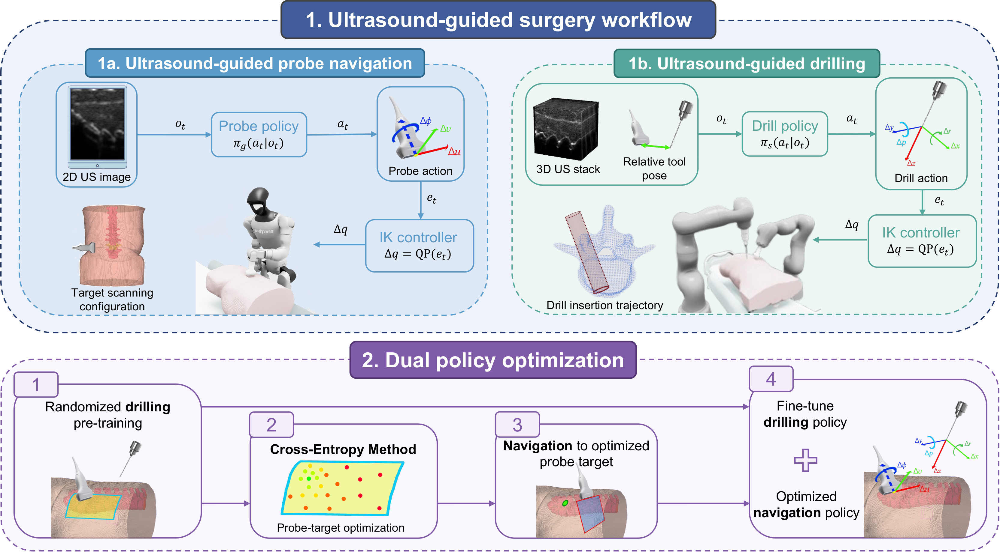
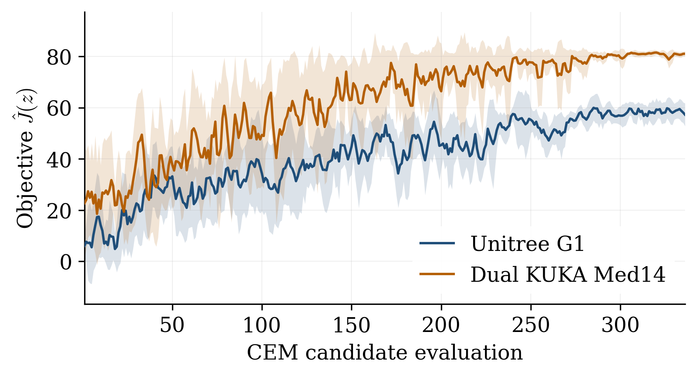
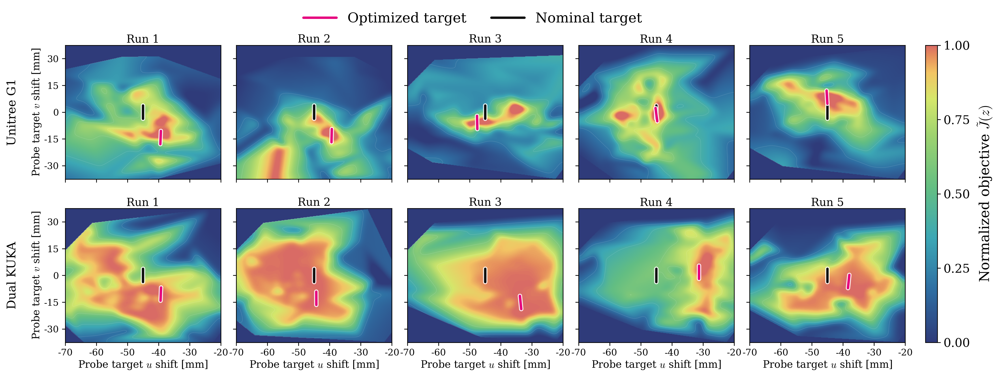

Ultrasound is a real-time, non-invasive medical imaging modality which is well suited for intraoperative guidance in robotic surgery. However, the effectiveness of ultrasound guidance depends critically on acquiring and maintaining an appropriate imaging configuration. Existing approaches separate ultrasound probe navigation from surgical manipulation, overlooking how the imaging configuration affects the downstream surgical task. In this work, we present SonoSurgeon, a learning-based framework that couples probe navigation with ultrasound-guided drilling for robotic spine surgery. The system comprises two learned skills: probe navigation, which acquires and maintains a target configuration over the vertebra, and ultrasound-guided drilling, which uses ultrasound observations and the relative tool pose to execute a planned insertion trajectory. To couple these components, we introduce a dual-policy optimization pipeline, which selects the probe configuration according to downstream drilling performance before adapting the drilling policy under actively guided imaging conditions.
We evaluate SonoSurgeon on five patient anatomical models using both a dual-KUKA LBR Med14 setup and a Unitree G1 humanoid. Simulation results show that dual-policy optimization reduces radial drilling error and increases achieved drilling depth relative to the nominal configuration while maintaining safety-ratio above 99%. The results demonstrate the feasibility of integrating learned ultrasound sensing and drilling into a single workflow and highlight the importance of selecting sensing configurations according to the requirements of the downstream drilling task.
SonoSurgeon couples two learned skills—probe navigation and ultrasound-guided drilling—into one workflow, evaluated on five patient models with a dual-KUKA LBR Med14 setup and a Unitree G1 humanoid holding the probe and drill as bimanual tools.

A learned policy reads the 2D ultrasound image and drives the probe to a target scanning configuration on the patient's back.
A second policy reads the 3D ultrasound volume and the drill-probe relative pose to guide the drill safely along a planned pedicle-screw trajectory.
A probe view chosen for anatomical clarity is not necessarily best for drilling. We instead select the probe target by downstream drilling performance:
Evaluated across five patient models and both embodiments, the coupled navigation+drilling workflow executes safely, and dual-policy optimization pushes the safety ratio above 99% on both platforms while reducing radial/angular error and increasing insertion depth relative to the baseline.
| Setting | Embodiment | Pos. err. [mm] | Ang. err. [deg] |
|---|---|---|---|
| Baseline | KUKA LBR Med14 | 1.48 ± 2.88 | 1.01 ± 3.59 |
| Unitree G1 | 3.35 ± 4.94 | 2.14 ± 4.67 | |
| Optimized | KUKA LBR Med14 | 0.93 ± 0.97 | 0.40 ± 0.55 |
| Unitree G1 | 2.12 ± 4.61 | 1.87 ± 4.78 |
| Setting | Embodiment | Radial err. [mm] | Angular err. [deg] | Insertion depth [%] | SR [%] |
|---|---|---|---|---|---|
| Baseline workflow | KUKA LBR Med14 | 1.71 ± 3.27 | 0.79 ± 0.94 | 72.90 ± 5.26 | 99.11 |
| Unitree G1 | 3.63 ± 2.20 | 3.91 ± 2.19 | 60.98 ± 11.64 | 97.94 | |
| Dual-policy optimization | KUKA LBR Med14 | 0.97 ± 0.64 | 0.75 ± 0.64 | 76.04 ± 3.38 | 99.92 |
| Unitree G1 | 2.32 ± 1.19 | 2.58 ± 1.20 | 67.35 ± 3.36 | 99.28 |
Drilling performance is sensitive to where the probe looks from. Scoring candidate probe targets with CEM converges to a better configuration than the nominal view, and the optimum shifts with each robot's kinematics—reducing radial error (KUKA: 1.71→0.97 mm; G1: 3.63→2.32 mm) and increasing insertion depth (KUKA: 72.90%→76.04%; G1: 60.98%→67.35%).


@article{sonosurgeon2026,
title = {SonoSurgeon: Learning Ultrasound-Guided Navigation and Drilling for Robotic Spinal Surgery},
author = {Author names placeholder},
journal = {arXiv preprint},
year = {2026}
}SonoSurgeon builds on the robotic ultrasound simulation backbone of SonoGym, implemented in IsaacLab. Humanoid whole-arm inverse kinematics is solved with Pink, and patient anatomical models are derived from the TotalSegmentator dataset. We gratefully acknowledge these open-source communities and contributors.